Les tables de Hong-Kong
Hong-Kong est une destination incontournable pour les amateurs de gastronomie, offrant une diversité culinaire qui réflète son histoire et sa culture. Ses restaurants, qu'ils soient modestes ou prestigieux, proposent des expériences uniques, allant des dim sum fraîchement préparés aux plats raffinés mêlant influences asistiques et occidentales.
La ville est reconnue pour sa maîtrise de la cuisine cantonaise, mais elle séduit également par son ouverture aux saveurs du monde. Dans chaque quartier, les restaurants rivalisent d'originalité pour offrir des repas qui enchantent les sens et célèbrent l'art de la table.
Nos meilleurs restaurants
Cristalroom Restaurant
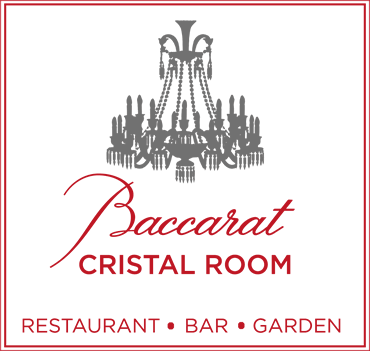
Tomocado Restaurant
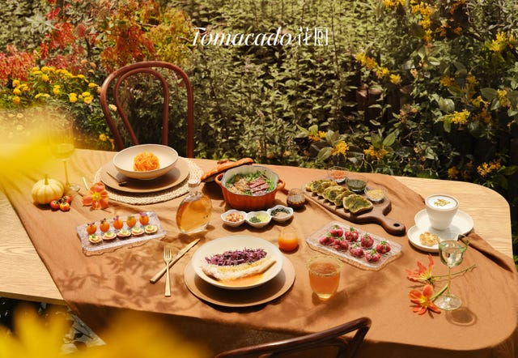 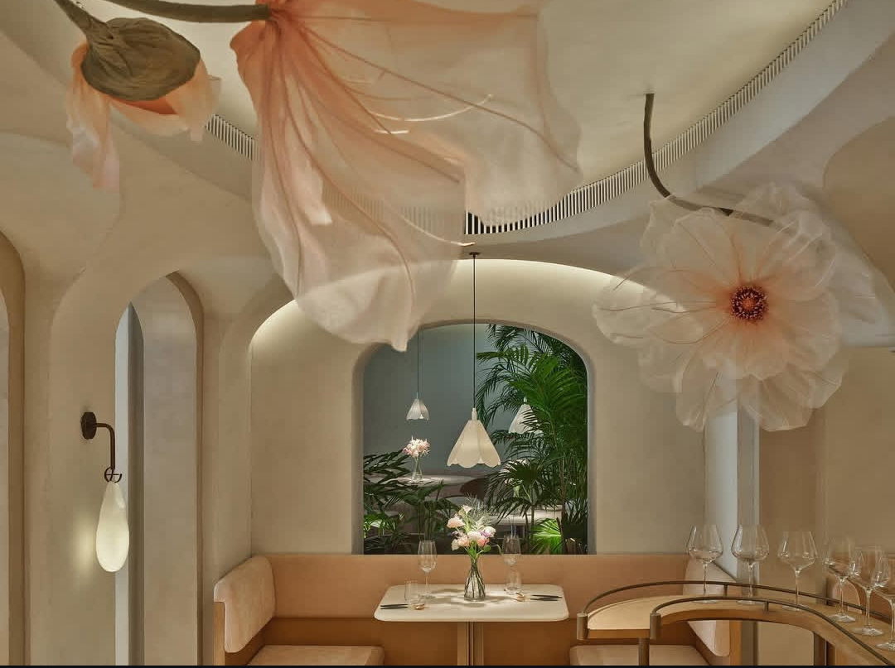Mini galerie
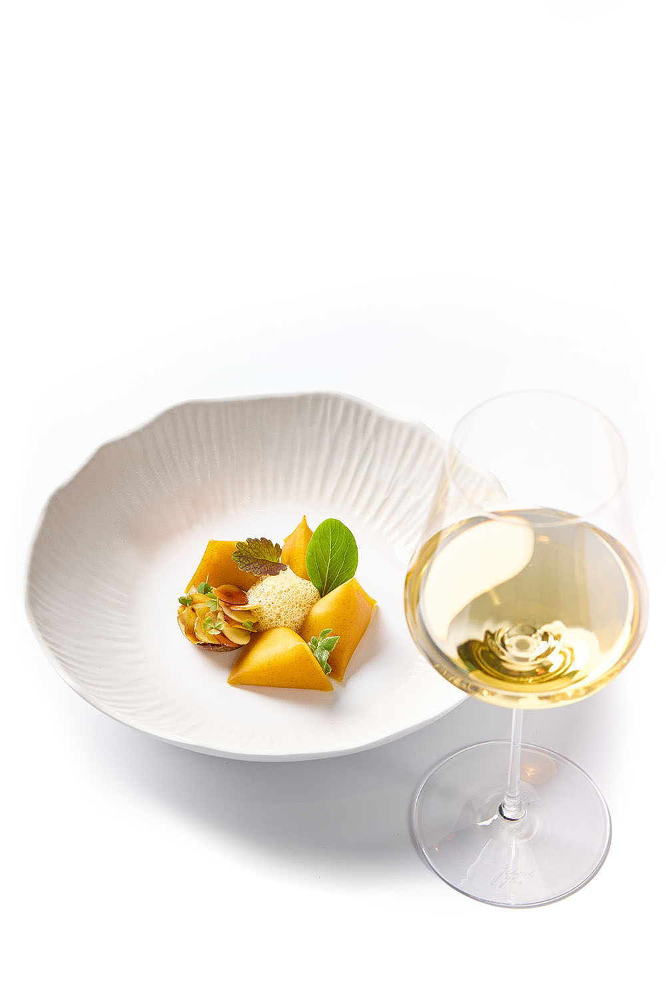
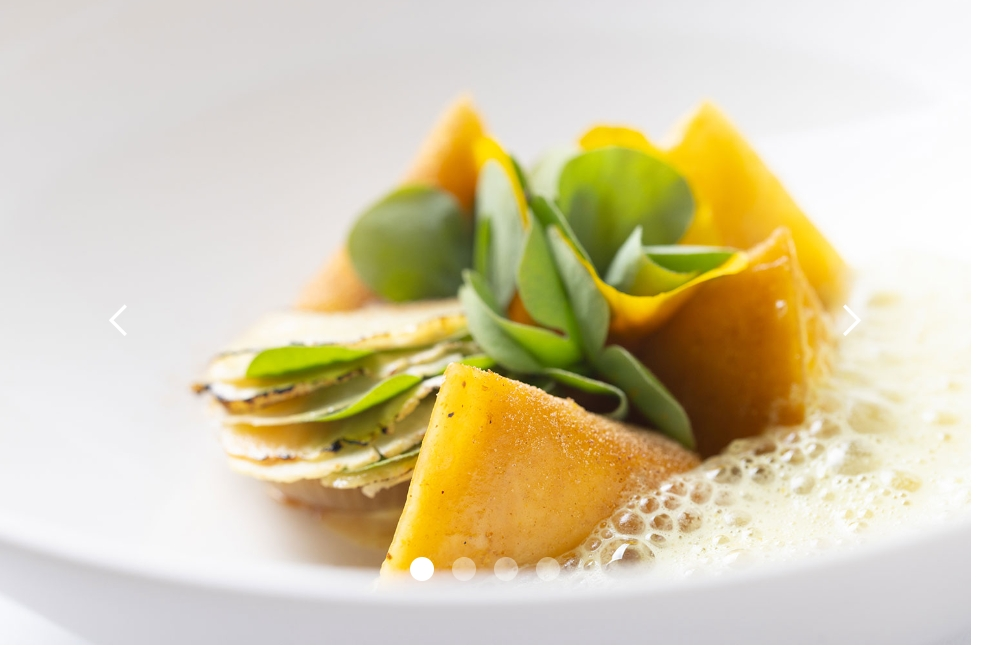
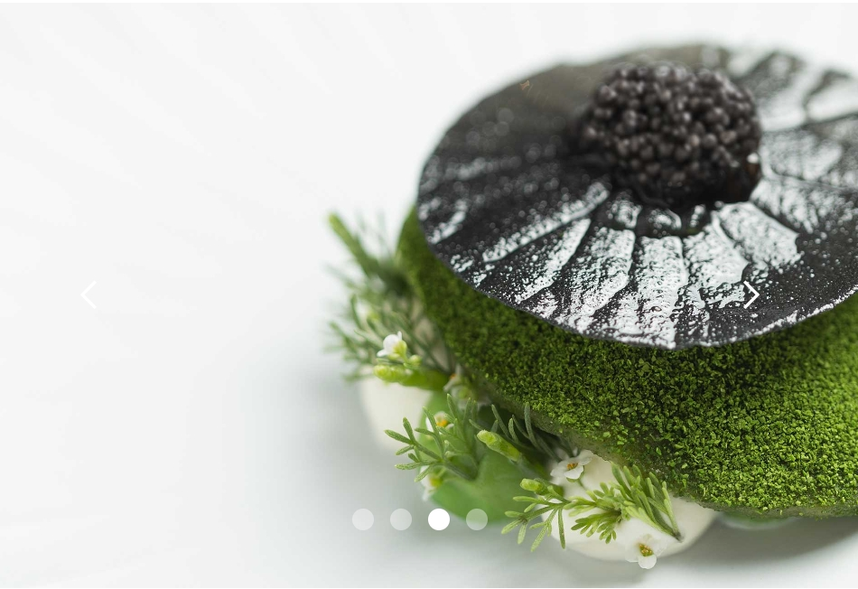
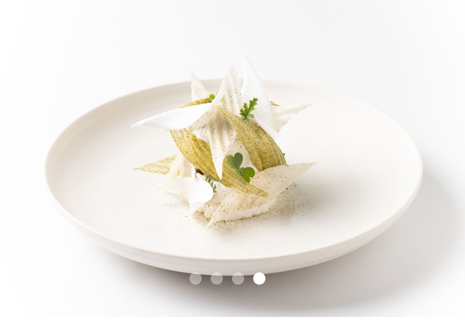
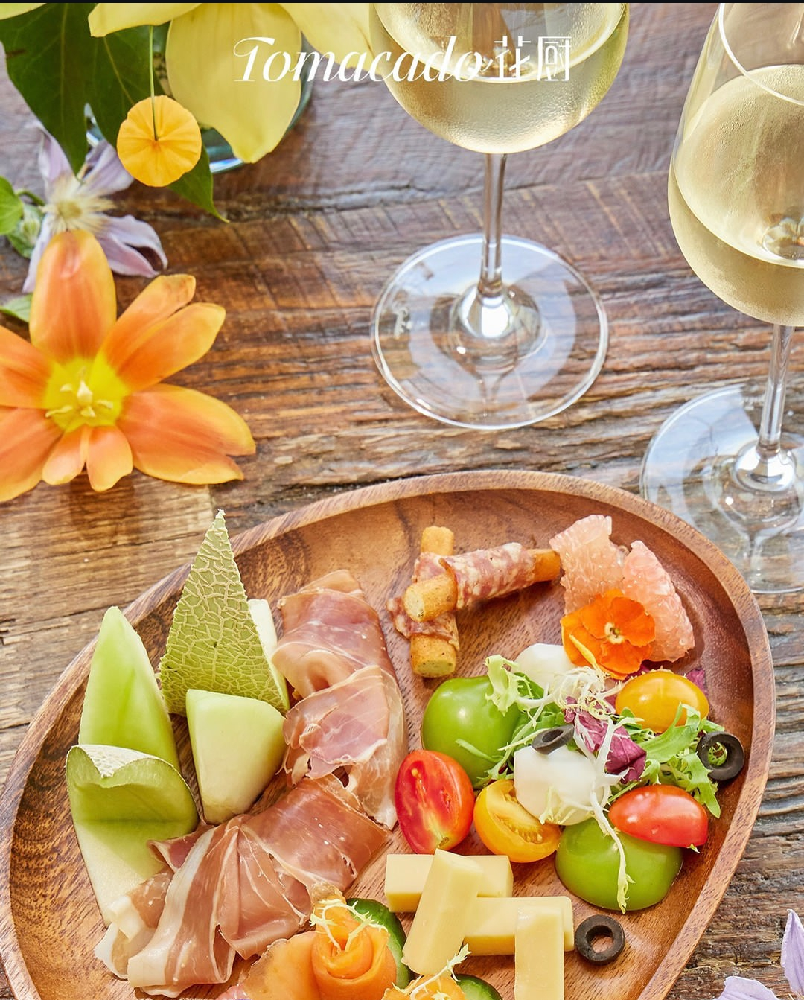
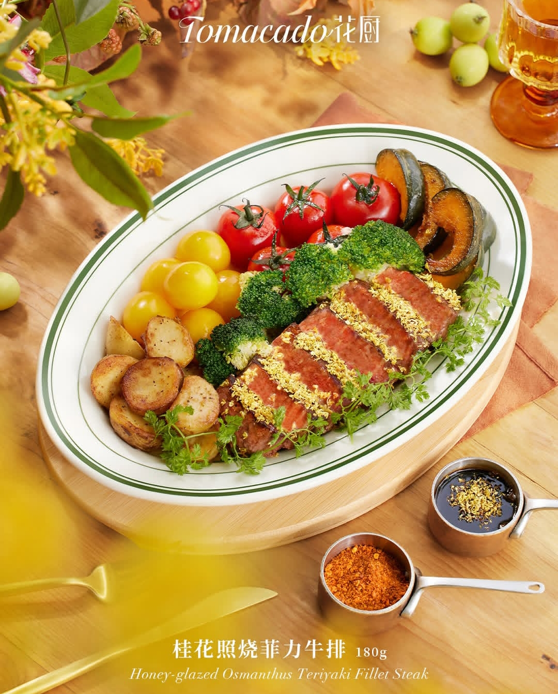
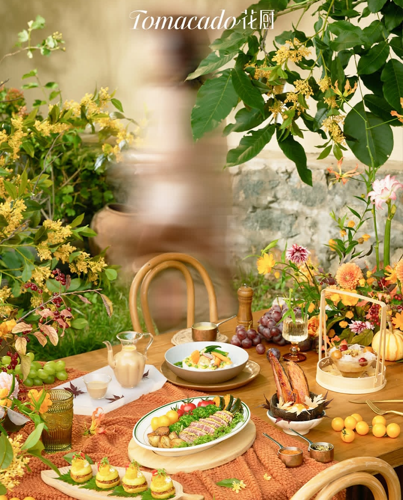
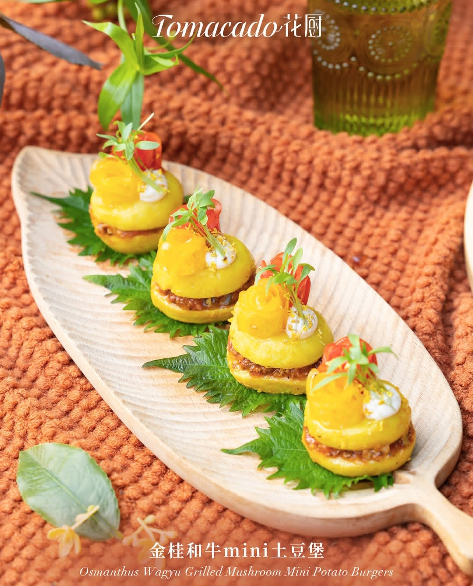
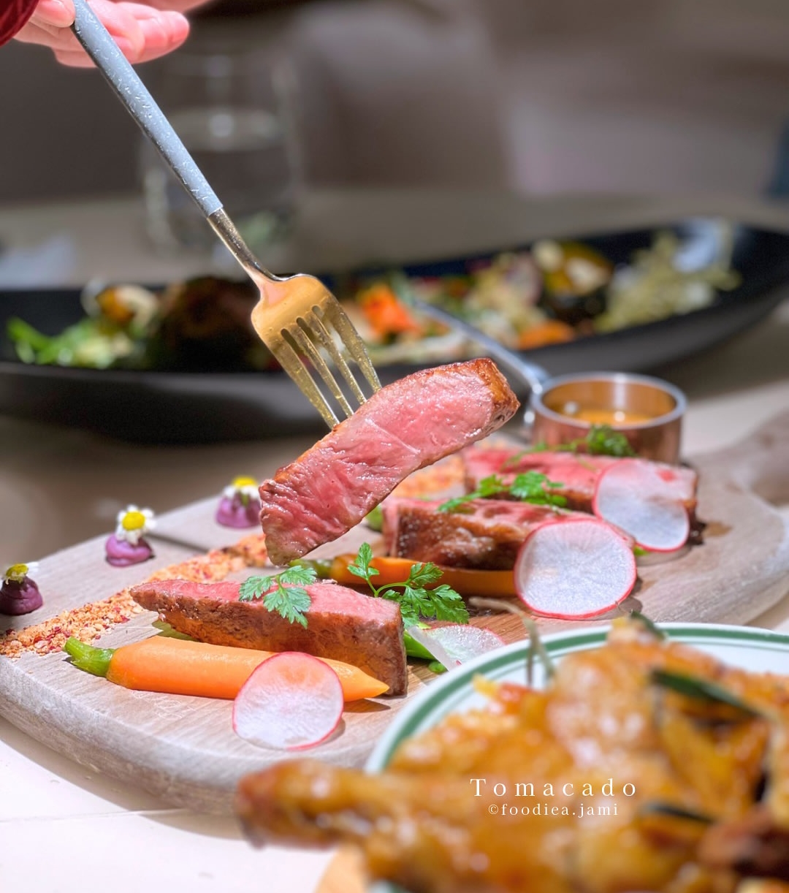
Statistiques
| Période | Nombre de restaurants |
|---|---|
| 1995 | 1500 |
| 2000 | 2000 |
| 2005 | 2700 |
| 2010 | 3200 |
| 2015 | 3800 |
| 2020 | 4200 |
| 2024 | 4500 |